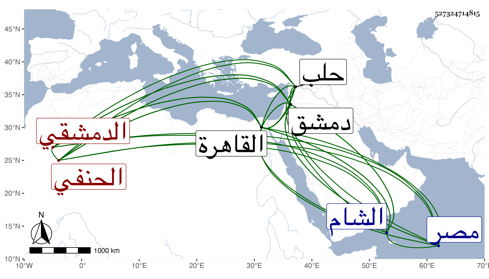

0902Sakhawi.DawLamic.ITO20230111-ara1.EIS1600.527324714815
Biography ID: 527324714815
364
عبد الوهاب بن أحمد بن محمد بن عبد الله بن إبراهيم التاج بن الشهاب الطرخاني ثم الدمشقي الحنفي نزيل القاهرة ويعرف كأبيه بابن عربشاه . ولد في يوم الثلاثاء ثامن عشري شوال سنة ثلاث عشرة وثمانمائة بحاج طرخان من دشت قبجاق ، ثم تحول منها مع أبيه إلى توقات ثم إلى حلب ثم إلى الشام وقرأ القرآن وغيره ، وتدرب بأبيه في العربية والفقه وغيرهما وسمع بقراءة أبيه على القاضي الشهاب بن الحبال صحيح مسلم وكذا سمع على عائشة ابنة الشرائحي وعلى شيخنا في سنة ست وثلاثين وبعدها وممن أخذ عنه العلاء الصيرفي والمحيوي المصري التبابي ، وحج في حياة أبيه سنة خمسين وأخذ الفرائض بدمشق عن الشهاب أحمد الحمصي وتميز فيها بحيث نظم فيها أرجوزة سماها روضة الرائض في علم الفرائض وشرحها وقرضهما له الأمين الأقصرائي والكافياجي وعضد الدين الصيرامي في آخرين ، وكتب الخط الحسن علي شرف بن أميرا وناب في قضاء دمشق والقاهرة مدة ثم استقل به في دمشق ثامن عشر رجب سنة أربع وثمانين عوضا عن ابن عبد بالبذل ثم صرف بالمحب ابن القصيف في شوال من التي تليها فقدم القاهرة مكثرا التشكي من الديون التي تحملها بسببه فلم يلبث أن شغر تدريس الفقه بالصرغتمشية بإعطاء مدرسها الصلاح الطرابلسي الأشرفية برسباي فقرر فيه وكان يبالغ في التلطف بجماعتها ثم كاد أن يستقر في قضاء مصر لما قبحت سيرة ابن المغربي الغزي سيما وقد عارضه في مسئلة وصنف فيها جزءا سماه البرهان الفارض لقول المعارض وافقه على مقالة فيه غيره وتخاشنا بحضرة السلطان مرة بعد أخرى فما تم وكانت الخيرة ، وقد قصدني غير مرة وذكر لي أنه عمل دلائل الإنصاف نظم مسائل طريقة الخلاف فزاد على خمس وعشرين ألف بيت وكذا له الإرشاد المفيد لخالص التوحيد نظم أيضا وشفاء الكليم مدح النبي الكريم كتبه لي بخطه وسمعته من لفظه مع غيره من نظمه ونثره والجوهر المنضد في علم الخليل بن أحمد وفتح العبير من فتح الخبير في علم التعبير نحو أربعة آلاف بيت عملهما بالقاهرة ومن ذلك قوله :
| ولقد شكوت إلى طبيبي علتي | مما اقترفت من الذنوب الجانيه |
| وصف الطبيب شراب مدح المصطفى | فهو الشفا فاشرب هنيئا عافيه |
وقوله مما قال أنه أنشده في النوم منها :
| ثوب العلوم محرز وطرازه | مدح الحبيب وذا رقيق الحاشيه |
وخمس أبيات السهيلي يا من يرى ما في الضمير ويسمع ومن نظمه معتذرا :
| أنظار نظمي فالعيوب غزيرة | فكلي عيوب بالتفضل فاجبروا |
| وستر فأنى عاجز ومقصر | وأنتم فأهل بالفضائل تستروا |
